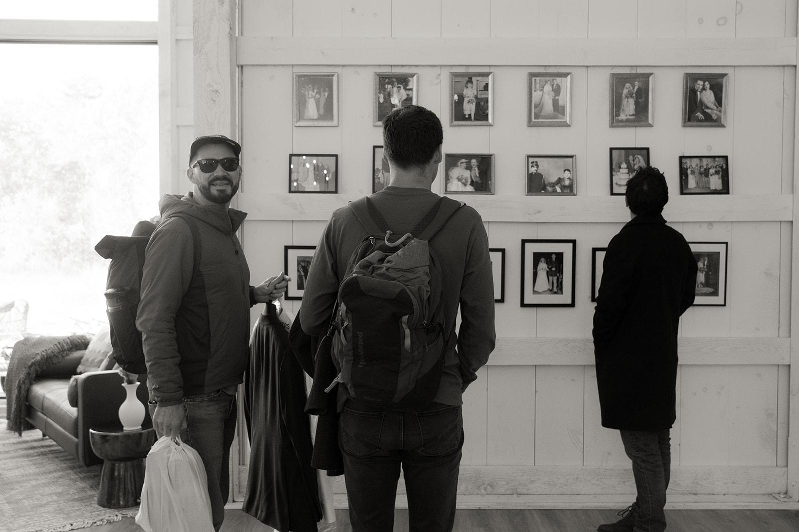
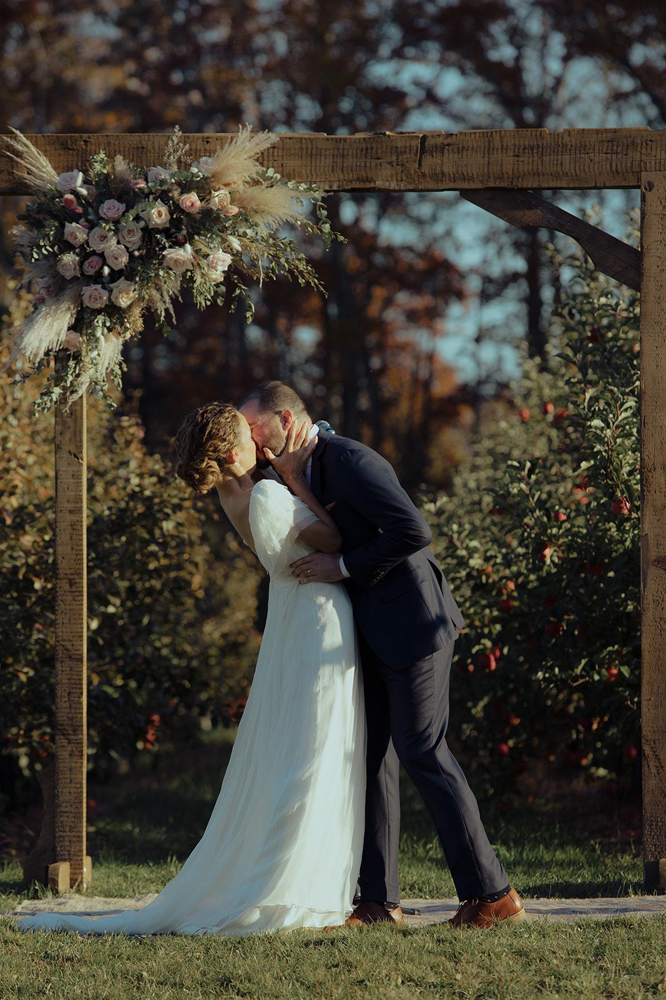
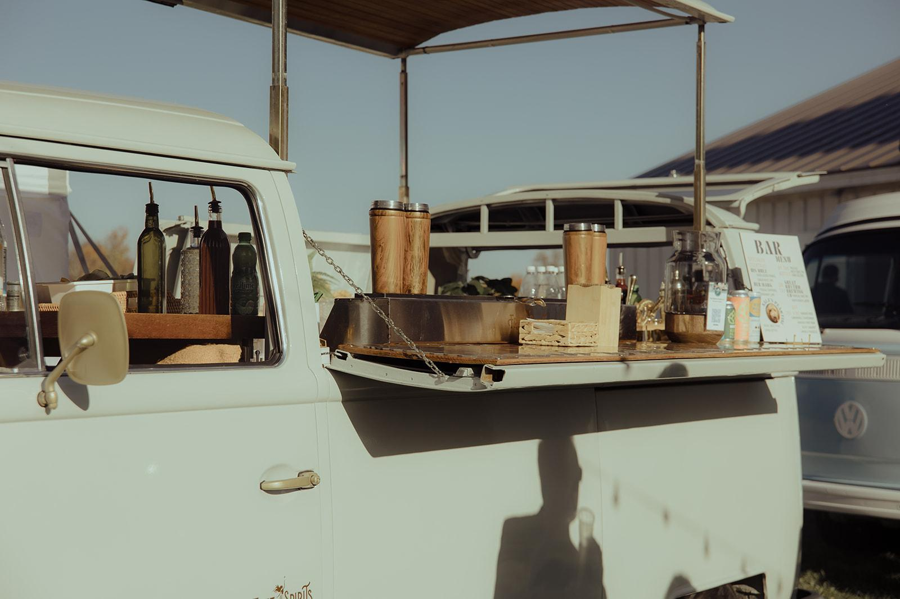
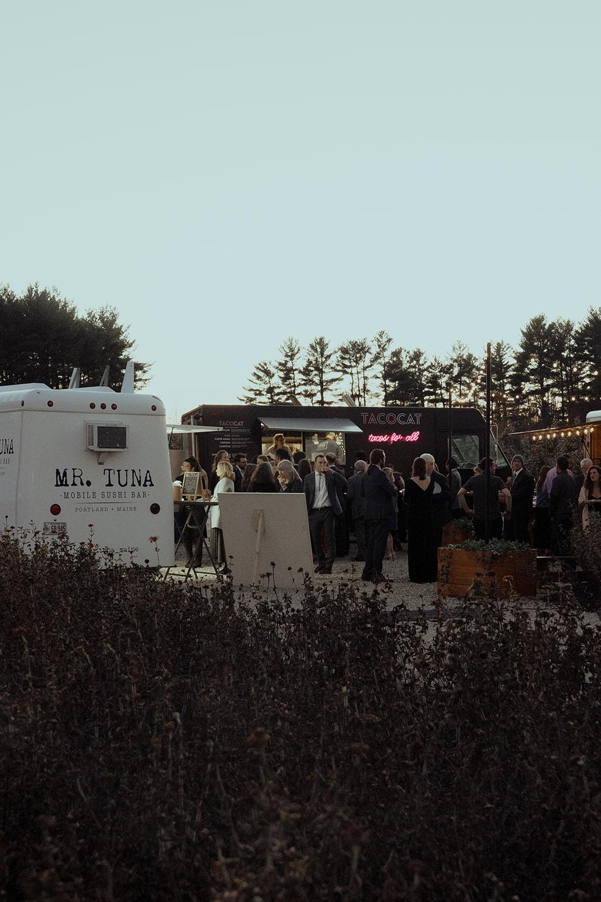
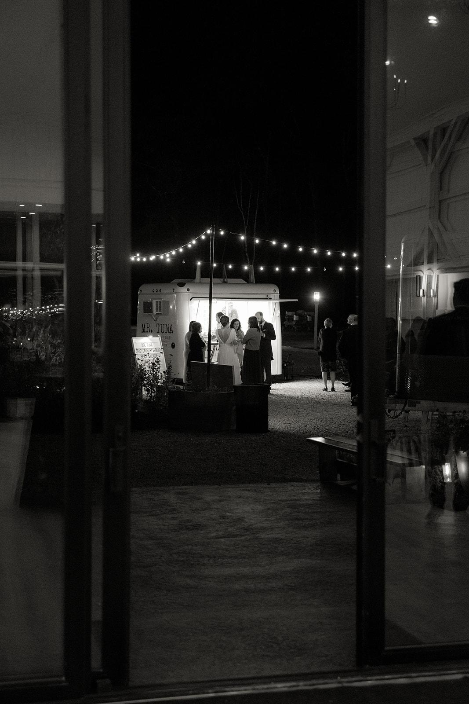
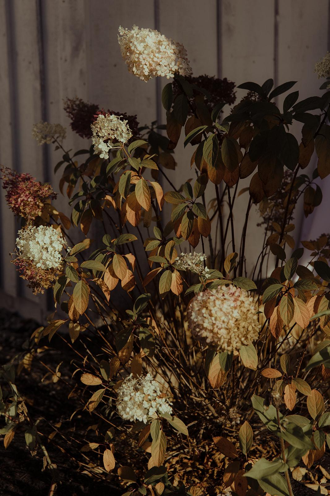

South Road Farm · Fayette, Maine
Most weddings give you a Saturday. This is a weekend.

Evening
Cars pull in through the afternoon. The farmhouse fills up. Someone finds the kitchen. Welcome drinks happen in the courtyard without an agenda — no program, no wristbands, no one telling you where to stand. Just the first hour of a long weekend with everyone you love finally in one place.
This is the part most venues don't give you. It's worth more than it sounds.

The Ceremony
Multiple ceremony sites — an open field with panoramic views in every direction, and a wooded nook for something more intimate. A wooden arch built by hand. Rows of wooden benches. Land that does most of the heavy lifting.

Cocktail Hour
The ceremony ends and everyone exhales. Live music fills the field. Guests drift between the fire pits, the lawn, and the courtyard. The bar — whatever form it takes — is yours to decide.


Late Night
The barn lights low. String lights out front. Someone swapped their shoes hours ago. The food window is still glowing. The party finds its own pace — because we built the space to let it.

Morning
Nobody's in a hurry. The farmhouse kitchen fills up slowly — coffee, last night's stories, someone piecing together the timeline. You have the property through midday, and it doesn't feel like a countdown. It feels like the end of something good.
Most weddings end in a parking lot at midnight. This one ends on a Sunday morning.
Ready to Talk?
If this feels like your kind of weekend, let's talk. We're available May through October and keep the calendar small on purpose. Reach out and we'll send everything you need — availability, pricing, and an invitation to come see it in person.